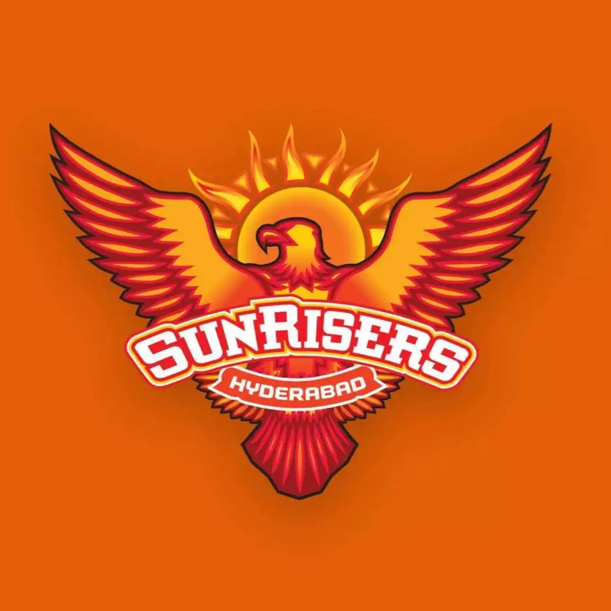
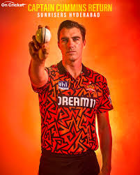
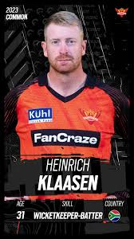
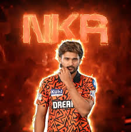
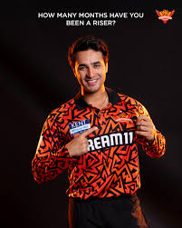
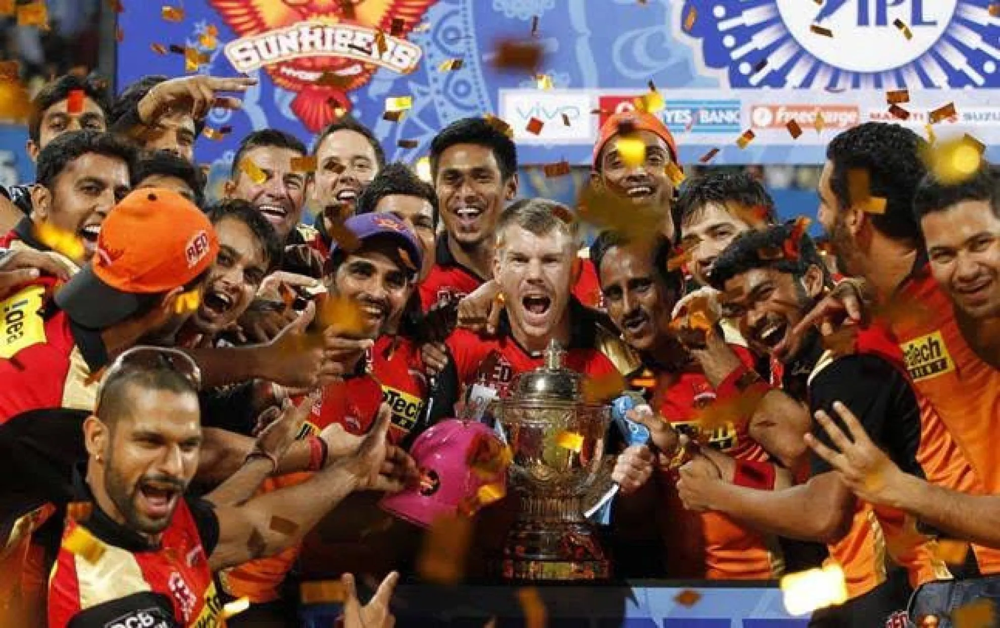
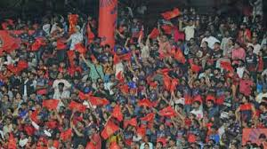
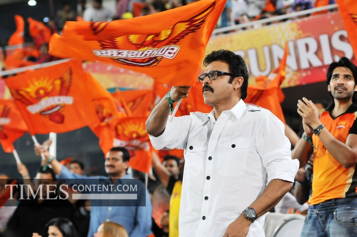
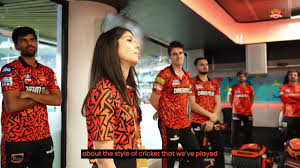

Welcome to Sunrisers Hyderabad
Indian Premier League Franchise Team
Sunrisers Hyderabad (SRH) is a professional IPL team known for its strong bowling attack and disciplined gameplay. Established in 2012, SRH has consistently been one of the most competitive teams.
🏆 IPL Champions 2016 | 🔥 Orange Army | 🏟️ Rajiv Gandhi Stadium

Pat Cummins (Captain)
World-class all-rounder and leader of SRH.

Heinrich Klaasen
Explosive middle-order batter and match finisher.

Nithish Kumar Reddy
Middle-order batter and right-arm medium pace bowler.

Abhishek Sharma
Explosive opener and left-arm spinner.
About SRH
Founded in 2012, Sunrisers Hyderabad replaced Deccan Chargers. Known for strong bowling units and disciplined strategy, SRH won IPL in 2016 under David Warner.
Squad
Pat Cummins, Travis Head, Abhishek Sharma, Heinrich Klaasen, Bhuvneshwar Kumar...
Recent Matches
SRH vs MI - Won
SRH vs CSK - Lost
Achievements
Team Stats
Top Scorers: Heinrich Klaasen (145+ runs) and Nitish Kumar Reddy (96+ runs)
Top Wicket Takers: Jaydev Unadkat and Harsh Dubey , each having claimed 4 wickets in the initial stages of the tournament.
Gallery




Match highlights, celebrations, fan moments.
Fans - Orange Army
One of the most passionate fan bases in IPL.
Has the most number of Telugu supporters.